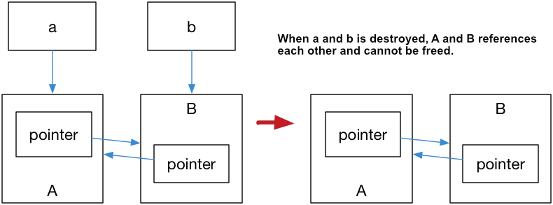

Modern C++ (C++11 之後的變化)
棄用語法
- 字串 literal 應該改用
const char *型別而不是char *型別宣告 register的效果被移除（不再具有將變數放入 CPU register 的效果）bool不可以++- C 語言風格的轉換方式
(type)被棄用，應該改用static_cast、reinterpret_cast、const_cast等方式轉換
新增語法
C++11：
-
指定 Null Pointer 應改用
nullptr而不是NULLNULL可能會被解析成int造成額外問題，例如有兩個 function 分別為foo(int a)與foo(char* b)，當我們呼叫foo(NULL)就不見得會呼叫foo(char* b)那個。
-
加入
constexpr：用來表示某一個 expression 或 function 輸出的結果是一個常數-
編譯器會去驗證這點，並且可以以此來優化程式碼
-
範例：
constexpr int fibonacci(const int n) { return n == 1 || n == 2 ? 1 : fibonacci(n-1)+fibonacci(n-2); }constexpr int var_constexpr = 1 + 2 + 3;
-
-
提供可以使用 initialization list 初始化任意物件的能力（但需要實作對應的 constructor）
- 範例：
#include <initializer_list> #include <vector> #include <iostream> class MagicFoo { public: std::vector<int> vec; MagicFoo(std::initializer_list<int> list) { for (std::initializer_list<int>::iterator it = list.begin(); it != list.end(); ++it) vec.push_back(*it); } }; int main() { // after C++11 MagicFoo magicFoo = {1, 2, 3, 4, 5}; std::cout << "magicFoo: "; for (std::vector<int>::iterator it = magicFoo.vec.begin(); it != magicFoo.vec.end(); ++it) std::cout << *it << std::endl; }
- 範例：
-
加入
auto：自動型別推導auto i = 5; // i is inferred as int auto arr = new auto(10); // arr is inferred as int *-
auto也常用於 template 指定 function return type 時，這樣就不需要額外定義另一個 type 變數：// Old way template<typename R, typename T, typename U> R add(T x, U y) { return x + y; } // After C++11 template<typename T, typename U> auto add(T x, U y){ return x + y; }
-
-
加入
decltype： 輸出變數是何種型別-
通常搭配
std::is_same<T, U>使用，檢查是否兩個型別是同一個型別auto x = 1; if (std::is_same<decltype(x), int>::value) std::cout << "type x == int" << std::endl;
-
-
Ranged for loop
std::vector<int> vec = {1, 2, 3, 4}; for (auto element : vec) std::cout << element << std::endl; // read only for (auto &element : vec) { element += 1; // writeable }- 宣告 ranged for loop 變數的原則：
- 想 copy 數值 => 使用
auto x - 想直接引用原本的物件，並且可能會修改 => 使用
auto &x - 想直接引用原本的物件，但不會修改 => 使用
auto const &x
- 想 copy 數值 => 使用
- 宣告 ranged for loop 變數的原則：
-
搭配
template使用別名：template<typename T, typename U> class MagicType { public: T dark; U magic; }; template<typename T> using TrueDarkMagic = MagicType<std::vector<T>, std::string>; int main() { TrueDarkMagic<bool> you; } -
Template 變動變數清單：
template<typename... Ts> void magic(Ts... args) { std::cout << sizeof...(args) << std::endl; } magic(); // Print: 0 magic(1); // Print: 1 magic(1, ""); // Print: 2 -
Delegate constructor：允許重複使用同一個 class 內的 constructor
class Base { public: int value1; int value2; Base() { value1 = 1; } Base(int value) : Base() { // delegate Base() constructor value2 = value; } }; -
繼承 constructor：使用
using關鍵字來使用 base class 的 constructorclass Subclass : public Base { public: using Base::Base; // inheritance constructor }; -
加入
override: 強制檢查是否複寫不存在的 virtual functionstruct Base { virtual void foo(int); }; struct SubClass: Base { virtual void foo(int) override; // legal virtual void foo(float) override; // illegal, no such virtual function }; -
加入
final: 阻止繼承或 overridestruct Base { virtual void foo() final; }; struct SubClass1 final: Base { }; // legal struct SubClass2 : SubClass1 { }; // illegal, SubClass1 has final struct SubClass3: Base { void foo(); // illegal, foo has final }; -
拒絕或明確要求預設實作（用於 constructor 或 operator 等等）：
class Magic { public: Magic() = default; // explicit let compiler use default constructor Magic& operator=(const Magic&) = delete; // explicit declare refuse constructor Magic(int magic_number); } -
enum class- 與
enum不同處在於：- 不會預設可以轉換為 int
- 多個
enum class存在相同名稱的 variant 也不會產生名稱衝突
enum class new_enum : unsigned int { value1, value2, value3 = 100, value4 = 100 }; - 與
C++17：
-
可以在 if 條件式宣告變數
if (const auto itr = std::find(vec.begin(), vec.end(), 3); itr != vec.end()) { *itr = 4; } -
可以對 if statement 使用
constexpr#include <iostream> template<typename T> auto print_type_info(const T& t) { if constexpr (std::is_integral<T>::value) { return t + 1; } else { return t + 0.001; } } int main() { std::cout << print_type_info(5) << std::endl; std::cout << print_type_info(3.14) << std::endl; } -
宣告變數時可以解構資料，例如下面的
[x, y, z]：#include <iostream> #include <tuple> std::tuple<int, double, std::string> f() { return std::make_tuple(1, 2.3, "456"); } int main() { auto [x, y, z] = f(); std::cout << x << ", " << y << ", " << z << std::endl; return 0; } -
Template 變動長度參數展開式：
#include <iostream> template<typename ... T> auto sum(T ... t) { return (t + ...); } int main() { std::cout << sum(1, 2, 3, 4, 5, 6, 7, 8, 9, 10) << std::endl; }
C++20：
-
auto可以用於 function signature：int add(auto x, auto y) { return x+y; } auto i = 5; // infered as int auto j = 6; // infered as int std::cout << add(i, j) << std::endl;
Lambda Function
Lambda function 指的是為了當下某個特定目的建立的匿名 function，作用通常不是為了減少重複程式碼，而是為了將某種程序做為參數傳遞出去。
語法：
[capture list] (parameter list) mutable(optional) exception attribute -> return type {
// function body
}
其中 [capture list] 代表從 lambda function 外部帶入的變數，注意該變數是在建立 lambda function 的當下就會複製，而不是在呼叫時被複製。
下面是一個 lambda function 的範例，注意建立 lambda function 的當下 value 的數值被 function 給捕獲並且複製一份。 因此就算後續 value 被改成 100 也不會造成影響。
void lambda_value_capture() {
int value = 1;
auto copy_value = [value] {
return value;
};
value = 100;
auto stored_value = copy_value();
std::cout << "stored_value = " << stored_value << std::endl;
// At this moment, stored_value == 1, and value == 100.
// Because copy_value has copied when its was created.
}
Capture list 的格式如下：
[]空清單[name1, name2, ...]最常見，捕獲一系列變數[&]捕獲外部參考（copy by reference），讓編譯器自行推斷要捕獲誰[=]捕獲外部值（copy by value），讓編譯器自行推斷要捕獲誰
C++14 加入可以在 capture list 中寫 expression 的能力：
#include <iostream>
#include <memory> // std::make_unique
#include <utility> // std::move
void lambda_expression_capture() {
auto important = std::make_unique<int>(1);
auto add = [v1 = 1, v2 = std::move(important)](int x, int y) -> int {
return x+y+v1+(*v2);
};
std::cout << add(3,4) << std::endl;
}
C++14 開始可以在 lambda 使用 auto ：
auto add = [](auto x, auto y) {
return x+y;
};
add(1, 2);
add(1.1, 2.2);
C++11 加入 std::function，正式明確定義 function 為一種型別：
#include <functional>
#include <iostream>
int foo(int para) {
return para;
}
int main() {
// std::function wraps a function that take int paremeter and returns int value
std::function<int(int)> func = foo;
int important = 10;
std::function<int(int)> func2 = [&](int value) -> int {
return 1+value+important;
};
std::cout << func(10) << std::endl;
std::cout << func2(10) << std::endl;
}
另外也加入了 std::bind 與 std::placeholder，用以延後傳遞參數的時機：
int foo(int a, int b, int c) {
;
}
int main() {
// bind parameter 1, 2 on function foo,
// and use std::placeholders::_1 as placeholder for the first parameter.
auto bindFoo = std::bind(foo, std::placeholders::_1, 1,2);
// when call bindFoo, we only need one param left
bindFoo(1);
}
std::move
C++11 加入了右值參考 T && 的概念，用途是可以將一個即將被銷毀的數值轉移到另一個變數。
std::move 提供了將一個左值轉換為右值參考的能力，一旦在 expression 中的右側出現了右值參考，C++ 便不會呼叫 copy constructor，而是改呼叫 move constructor (編譯器預設會實作一個)。
Move constructor 的概念是盡可能地只複製 pointer，而不是整份資料，並同時將舊物件內的 pointer 清除（改成 nullptr ），以避免大量資料被複製的行為發生，這也是 std::move 最常見的用途。
考慮以下例子：
template <class T>
swap(T& a, T& b) {
T tmp(a); // we've made a second copy of a
a = b; // we've made a second copy of b (and discarded a copy of a)
b = tmp; // we've made a second copy of tmp (and discarded a copy of b)
}
在這個例子中，發生了三次資料複製。
我們可以使用 std::move 改寫來避免複製資料：
template <class T>
swap(T& a, T& b) {
T tmp(std::move(a));
a = std::move(b);
b = std::move(tmp);
}
如果 T 是一個資料結構，例如 vector<int> ，那裡面可能就包含大量資料，用第一版就會浪費大量的資源與時間。
如同 copy constructor，預設 compiler 會幫每一個型別實作一個 move constructor，作法基本上跟 copy constructor 差不多。只差在他不會複製指標指向的資料，而是單純將指標複製一份（做 shallow copy 而非 deep copy）。同時也會修改原本 class 的 member，把所有變數都清空（避免跟 moved 後的物件使用到相同的記憶體空間）。
新增的 Containers
-
std::array- 威力加強版的 array，提供了一些 container 的額外功能：
std::array<int, 4> arr = {1, 2, 3, 4}; arr.empty(); // check if container is empty arr.size(); // return the size of the container // iterator support for (auto &i : arr) { // ... } // use lambda expression for sort std::sort(arr.begin(), arr.end(), [](int a, int b) { return b < a; }); // illegal, different than C-style array, std::array will not deduce to T* // int *arr_p = arr; -
std::forward_list- 只有單向的 linked list
-
unordered_set/unordered_map跟其他東西- Hash map 基底的實作，提供 O(1) 插入與查找
-
std::tuplestd::pair威力加強版，允許任意數量的組合- 常用 function
std::get: Get the value of a position in the tuplestd::tie: tuple unpacking
#include <iostream> #include <stdexcept> #include <string> #include <tuple> std::tuple<double, char, std::string> get_student(int id) { switch (id) { case 0: return {3.8, 'A', "Lisa Simpson"}; case 1: return {2.9, 'C', "Milhouse Van Houten"}; case 2: return {1.7, 'D', "Ralph Wiggum"}; case 3: return {0.6, 'F', "Bart Simpson"}; } throw std::invalid_argument("id"); } int main() { const auto student0 = get_student(0); std::cout << "ID: 0, " << "GPA: " << std::get<0>(student0) << ", " << "grade: " << std::get<1>(student0) << ", " << "name: " << std::get<2>(student0) << '\n'; const auto student1 = get_student(1); std::cout << "ID: 1, " << "GPA: " << std::get<double>(student1) << ", " << "grade: " << std::get<char>(student1) << ", " << "name: " << std::get<std::string>(student1) << '\n'; double gpa2; char grade2; std::string name2; std::tie(gpa2, grade2, name2) = get_student(2); std::cout << "ID: 2, " << "GPA: " << gpa2 << ", " << "grade: " << grade2 << ", " << "name: " << name2 << '\n'; // C++17 structured binding: const auto [gpa3, grade3, name3] = get_student(3); std::cout << "ID: 3, " << "GPA: " << gpa3 << ", " << "grade: " << grade3 << ", " << "name: " << name3 << '\n'; }
Smart Pointers
Smart pointer 的加入大幅改進了 C++ 管理記憶體的彈性。以往 C++ 開發者如果沒有正確使用 pointer，則可能會造成該 pointer 指向非法空間 (segmentation fault) 或者 memory leak 等常見問題。如果 C++ 開發者使用 smart pointer，C++ 就能夠自動進行記憶體管理，並在適當的時機釋放該釋放的記憶體。
-
std::shared_ptr: 使用計數器管理記憶體的 pointer。- 原理：每次複製 pointer 時都會造成內部的計數器加一，pointer 被銷毀時計數器減一，當計數器歸零時（即所有的 pointer 都被銷毀時），就會自動釋放背後物件的記憶體空間。
auto pointer = std::make_shared<int>(10); auto pointer2 = pointer; // reference count+1 auto pointer3 = pointer; // reference count+1 int *p = pointer.get(); // no increase of reference count std::cout << "pointer.use_count() = " << pointer.use_count() << std::endl; // 3 std::cout << "pointer2.use_count() = " << pointer2.use_count() << std::endl; // 3 std::cout << "pointer3.use_count() = " << pointer3.use_count() << std::endl; // 3 pointer2.reset(); std::cout << "reset pointer2:" << std::endl; std::cout << "pointer.use_count() = " << pointer.use_count() << std::endl; // 2 std::cout << "pointer2.use_count() = " << pointer2.use_count() << std::endl; // pointer2 has reset, 0 std::cout << "pointer3.use_count() = " << pointer3.use_count() << std::endl; // 2
- 原理：每次複製 pointer 時都會造成內部的計數器加一，pointer 被銷毀時計數器減一，當計數器歸零時（即所有的 pointer 都被銷毀時），就會自動釋放背後物件的記憶體空間。
-
std::unique_ptr: 不能被複製只能 move 的 pointer。-
原理：當每次進行 pointer assignment 的行為時，被限定只能用 move 而不能複製的 pointer。舊的 pointer 在 move 完後會當即失效，無法繼續使用。而當這個唯一的 pointer 被銷毀時，背後物件的記憶體也會跟著被釋放。
#include <iostream> // std::cout #include <memory> int main() { auto pointer = std::make_unique<int>(10); // make_unique, from C++14 // auto pointer2 = pointer; // copy is illegal auto pointer3 = std::move(pointer); // move is OK std::cout << pointer << std::endl; std::cout << pointer3 << std::endl; }
-
-
std::weak_ptr: 弱指針，針對shared_ptr設計，建立時不會引起計數器加一。-
shared_ptr有個常見的問題是，如果有兩個shared_ptr互相指向對方，那麼就會造成計數器永遠不會變成 0：
- 因此這時通常會讓其中一個 pointer 改成用
weak_ptr，這樣就shared_ptr就可以正常歸零。
- 因此這時通常會讓其中一個 pointer 改成用
-
用法：直接 assign
shared_ptr給weak_ptr即可std::shared_ptr<int> a = std::make_shared<int>(42); std::weak_ptr<int> b = a;
-